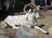
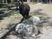
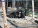
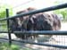
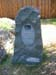
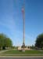
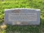
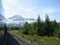
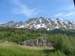
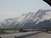

DAVID G. SIMPSON
Personal Web Site
ALASKA PHOTO ALBUM: PAGE 1
|  A Dall sheep at the Alaska Zoo in Anchorage. |
 Alpacas at the Alaska Zoo. |
|
|  Tibetan yak at the Alaska Zoo. |
 Musk ox at the Alaska Zoo. |
|
|  Memorial to Annabelle the Asian elephant, who was the first animal at the Alaska Zoo. |
 The Anchorage Veterans Memorial. I spent some time here on Memorial Day, at exactly the same time that the volunteers I work with were having their Memorial Day service at the Rosa Bonheur Memorial Park in Elkridge, Maryland. |
|
|  A marker at the Anchorage Veterans Memorial (Memorial Day 2006). |
Leaving the Alaska Railroad station in Anchorage on my way to Whittier, where I will take a cruise to see glaciers on Prince William Sound. |
|
 Scenery from the train on the way to Whittier. |
 Scenery from the train on the way to Whittier. |
|
|  Scenery from the train on the way to Whittier. |
 Scenery from the train on the way to Whittier. This pictures was taken from the observation car. |
{kind=link}
{kind=link}
{kind=link}
{kind=link}
{kind=link}
{kind=link}
{kind=link}
{kind=link}
{kind=link}
{kind=link}
{kind=link}
| Page 1 of 6 | Next >>> |
|---|
Contact Information
I may be contacted at: